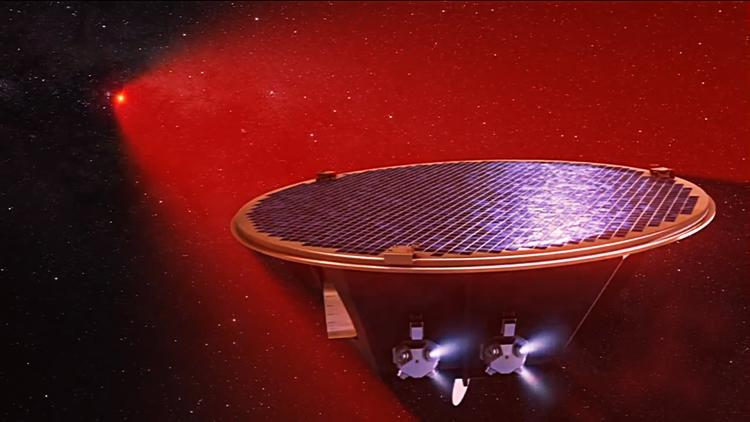
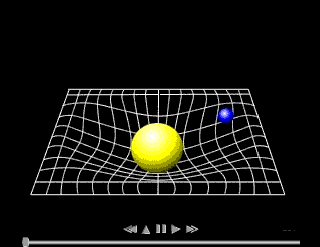
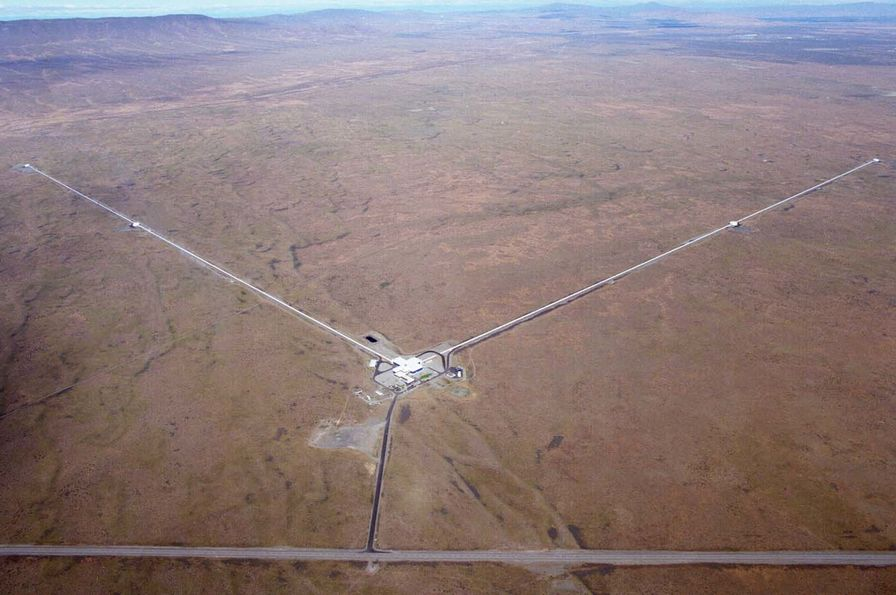
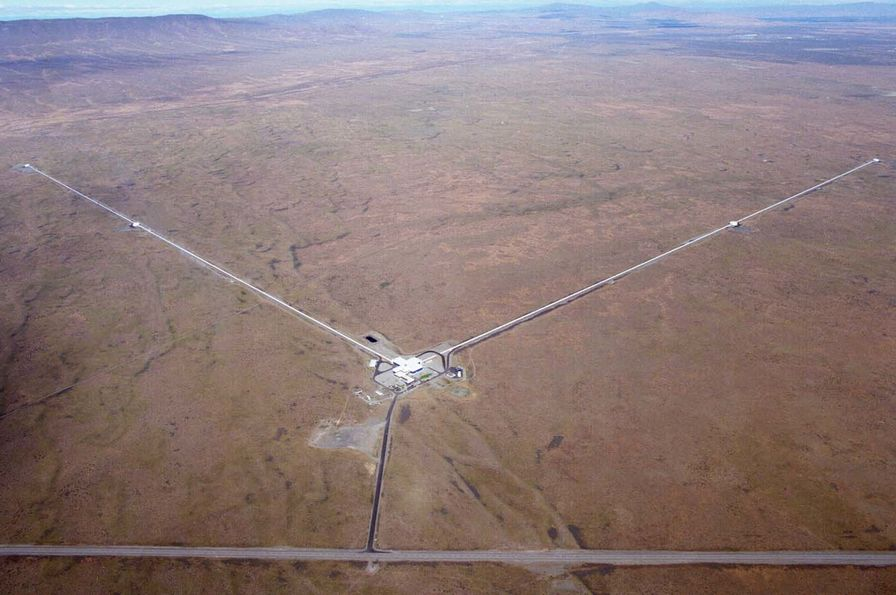
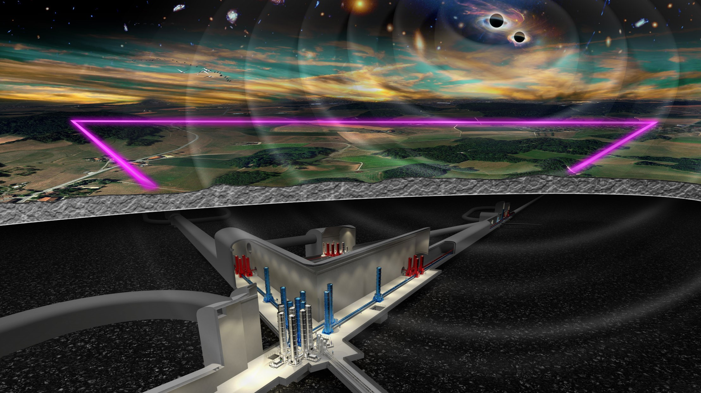
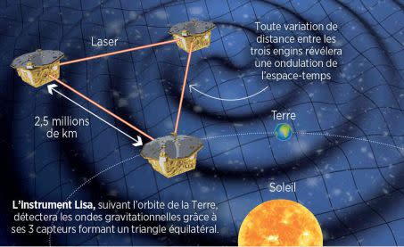

Gravitational Waves, LISA the Crazy Project of the ESA
 Representation of one of the LISA constellation satellites ©AEI/MildeMarketing/Exozet
What Are Gravitational Waves?
"Gravitational wave," a term that might seem straight out of a science fiction movie, yet this phenomenon is very real!
It is one of the most recent and fascinating discoveries in physics... To understand what these waves are, we must first dive into the history of the theory of gravity and the Universe.
An Idea Born with Albert Einstein
The story of gravitational waves begins at the start of the 20th century with the genius of Albert Einstein. In 1915, as part of his general theory of relativity,
Einstein revolutionized our understanding of space, time, and gravity.
Unlike Newton's idea that gravity was an instantaneous force acting at a distance, Einstein proposed that gravity is the result of the curvature of space-time, this sort of invisible fabric on which everything, including light, evolves.
Imagine space-time as a giant trampoline. If you place a heavy ball at the center, it deforms the fabric, creating a kind of "dip." Similarly, massive bodies like planets or stars curve space-time around them, and it is this curvature that creates what we feel as gravity.
*
Illustration of the curvature of space-time, responsible for the gravitational force of an object around a star
But Einstein didn't stop there. By analyzing the effects of these deformations in more detail, he realized that when massive objects move quickly, like two stars orbiting each other, they can create ripples in space-time, much like waves on water.
These ripples, or "gravitational waves," propagate through the Universe, carrying with them valuable information about the cosmic events that created them.
 *
Illustration of the emission of gravitational waves by a binary neutron star system
*
Illustration of the emission of gravitational waves by a binary neutron star system
What Is a Gravitational Wave?
So, what exactly is a gravitational wave? As mentioned earlier, it is a small ripple in the structure of space-time. These ripples travel at the speed of light, carrying information about the extreme phenomena that generated them. For example, when a massive star explodes in a supernova, or when two black holes collide, these events create gravitational waves that travel across the Universe.
The wave itself is both a deformation of space and time. Imagine throwing a stone into a calm lake: the wave propagates across the surface of the water. Similarly, a gravitational wave "briefly" distorts space-time as it moves, causing tiny variations in the distance between two objects. These variations are incredibly small, on the order of a fraction of a billionth of the width of a proton, making their detection extremely difficult but also incredibly fascinating.
Why Is It Important?
The detection of gravitational waves is not just a technological feat. It opens a new window into the Universe. Thanks to them, astrophysicists can now observe phenomena invisible through light, such as black holes or neutron star collisions, which cannot be detected by traditional telescopes.
Gravitational waves are therefore a true revolution because they allow scientists to explore aspects of the Universe that were previously out of reach. They add a new dimension to our understanding of the cosmos, allowing us to test Einstein’s theories under extreme conditions and learn more about the very nature of space and time.
How to Detect Gravitational Waves?
The Existence of Gravitational Waves Confirmed... a Century Later!
The idea of gravitational waves seemed almost too abstract to be tested directly. Indeed, these ripples are extremely weak and difficult to detect with our instruments. For over 100 years, although Einstein's equations predicted their existence, there was no concrete proof of their presence. Yet, the theory remained compelling, and scientists persisted in their quest to find a detection method.
It was only in 2015, a century after the publication of general relativity, that the scientific community succeeded in directly observing these waves, marking a resounding victory for modern physics. This great moment took place thanks to the LIGO (Laser Interferometer Gravitational-Wave Observatory) detectors in the United States, which recorded tiny vibrations in space-time resulting from the collision of two supermassive black holes.
LIGO: A Cutting-Edge Technology to Detect Tiny Waves
LIGO uses a technique called laser interferometry to detect gravitational waves. The concept is simple in theory: a laser beam is split into two, traveling through perpendicular arms (each 4 kilometers long) before reflecting off mirrors and recombining. When a gravitational wave passes, space-time slightly distorts, changing the length of each arm of the detector. This results in a shift in the recombination of the beams, which a light detector captures.
LIGO's instruments are capable of measuring length variations as small as one-billionth of the size of a proton, an astonishing precision for detectors located kilometers apart. This requires an extremely stable environment, far from any sources of mechanical and thermal noise, which is why the LIGO facilities are located in remote areas of the United States (in Livingston, Louisiana, and Hanford, Washington).
 *
Representation of a Michelson interferometer
*
Photo of LIGO near Hanford
*
Representation of a Michelson interferometer
*
Photo of LIGO near Hanford
Virgo: A Key European Partner
The Virgo detector, located in Cascina, Italy, works on the same principle as LIGO, but it is slightly larger (around 3 kilometers long for each arm). Its role in gravitational wave astronomy complements that of LIGO. By combining data from LIGO and Virgo, scientists can more precisely determine the location and characteristics of astrophysical events that generate gravitational waves, such as black hole or neutron star mergers.
Furthermore, the collaborations between LIGO and Virgo have expanded the observational window. When two (or more) detectors record the same signal, it is possible to triangulate the origin of the gravitational wave, allowing astronomers to explore these phenomena from a multi-messenger perspective by combining observations of gravitational waves, electromagnetic waves, and cosmic rays.
A Promising Future
Since their first detection in 2015, the LIGO and Virgo observatories have detected dozens of signals from black hole mergers, binary neutron star systems, and other extreme cosmic phenomena. These observations have opened a new branch of astronomy, enabling scientists to study the universe in a completely unprecedented way.
The future of gravitational wave detection is promising, with projects like KAGRA in Japan and the upcoming Einstein Telescope in Europe, which will further improve the sensitivity of the instruments. These advancements could well revolutionize our understanding of astrophysical phenomena and bring us closer to a better understanding of the nature of space-time itself.
The LIGO and Virgo detectors continue to play a key role in mapping the universe, offering insights that were previously impossible and proving every day that the scientific quest to understand the universe is constantly evolving.
*
Artist’s view of the Einstein Telescope ©CNRS/Marco Kraan, Nikhef
LISA: Laser Interferometer Space Antenna
LISA (Laser Interferometer Space Antenna) is an ambitious and revolutionary project in the field of gravitational wave astronomy, and it marks a turning point in our ability to explore the universe through distortions in space-time. Unlike its Earth-based counterparts, such as LIGO and Virgo, LISA will be located in space and operate at much lower frequencies, opening a new dimension of gravitational wave detection.
A Space-based Detector for Low-Frequency Waves
One of the main differences between LISA and Earth-based detectors like LIGO and Virgo lies in the frequency of gravitational waves each instrument is designed to detect. LIGO and Virgo are optimized for observing high-frequency waves, typically generated by events such as the merger of stellar black holes or neutron stars. In contrast, LISA will be capable of detecting gravitational waves at much lower frequencies, typically in the range of 0.1 to 1 Hz, corresponding to much more distant and massive cosmic phenomena.
These low frequencies are created by events such as the merger of supermassive black holes, the coalescence of binary systems of black holes or neutron stars in distant galaxies, as well as fluctuations in space-time due to the presence of large-scale massive structures. These types of events escape detection by Earth-based instruments, which are sensitive to higher frequency ranges.
The Design of LISA: Three Satellites in a Triangular Formation
LISA will not be a single instrument, but rather a constellation of three satellites that will be placed in orbit around the Sun, forming an equilateral triangle with detection arms about 2.5 million kilometers long. These satellites, moving in perfect synchrony, will measure the tiny distortions in space-time induced by gravitational waves.
Each arm of this triangular formation will measure the distance difference between two distant satellites with incredible precision. These measurements will be based on lasers, which will send beams between the satellites. When a gravitational wave passes through the space, it slightly changes the distance between the satellites, and these minuscule variations will be detected by instruments on each satellite. The mission design ensures that noise effects, such as those caused by the space environment or the movements of the satellites themselves, are minimized to ensure the most accurate measurements possible.
*
Artist's view of the LISA constellation ©Bruno Bourgeois
Laser Technology and Space Interferometry
LISA will rely on technology similar to that of LIGO and Virgo, namely laser interferometry. This involves using a laser to send light beams between the three satellites. If a gravitational wave passes through the region, it distorts space-time and thus changes the length of the detector arms, causing a difference in the time it takes for light to travel through each arm. This tiny variation will be measured with exceptional precision, allowing the detection of space-time distortions caused by gravitational waves.
However, unlike LIGO and Virgo, which are based on Earth and affected by atmospheric turbulence and ground noise, LISA will benefit from the absence of atmosphere, allowing for much greater sensitivity. Moreover, gravitational disturbances related to Earth, such as movements of the Earth's crust, will not affect LISA, as the satellites will be in space, shielded from these local influences.
The Scientific Goal of LISA
LISA will allow the observation of astrophysical events that were previously invisible to ground-based detectors. In particular, it will study the mergers of supermassive black holes, which occur in very distant galaxies, as well as binary systems of neutron stars in regions of the universe that are beyond our current reach. These phenomena are powerful sources of gravitational waves, but their signals are not detectable with current ground-based instruments due to their low frequencies.
LISA might also observe very weak oscillations in space-time caused by the effects of dark matter or dark energy, two of the greatest mysteries of modern cosmology. These studies could also offer new perspectives on cosmic inflation, the rapid expansion of the universe at the very beginning of its birth, which might manifest as primordial gravitational waves captured by LISA.
A Launch Expected for the Late 2030s
The launch of LISA is planned for the late 2030s, and it is one of the flagship projects of the European Space Agency (ESA), in collaboration with NASA. Before its launch, many tests and simulations will need to be conducted to ensure that the entire space system functions with the required precision. This mission is part of a future where studying gravitational waves from space should complement and enrich the discoveries made by ground-based detectors like LIGO and Virgo, while opening new avenues for exploring the universe.
In summary, LISA is set to be a fundamental instrument in modern astronomy, shedding new light on astrophysical phenomena that were previously beyond our reach. With its ability to detect low-frequency gravitational waves, LISA will not only enhance our understanding of the universe but also push the boundaries of fundamental physics.
For Further Reading
If you're interested in this topic, I can direct you to my end-of-studies report at CPPM, which further explores gravitational waves, as well as detection, with a prototype of an interferometric test bench for LISA:
©Alexandre Condette
Sources
LISA Mission Overview - European Space Agency (ESA)
The official ESA source presents details of the LISA mission, its design, scientific objectives, and its potential impact on gravitational wave astronomy.
LISA Mission Overview - ESANASA's LISA Overview
NASA provides a detailed overview of LISA, particularly the partnership with ESA and its role in the exploration of gravitational waves in space.
NASA LISA OverviewLISA: A New Window on the Universe - Nature Astronomy (2020)
This article published in Nature Astronomy offers an in-depth presentation of the LISA mission, including its objectives, technological challenges, and scientific prospects.
LISA: A New Window on the Universe - Nature AstronomyGravitational Wave Detection and LIGO - National Science Foundation (NSF)
This source provides an overview of the principles of gravitational wave detection through detectors like LIGO, as well as the role of these instruments in understanding gravitational waves.
NSF - LIGO and Gravitational WavesThe LIGO Scientific Collaboration
The official site of the LIGO collaboration provides details on past discoveries, the technology used, and the scientific results from the LIGO and Virgo detectors.
LIGO Scientific CollaborationVirgo Collaboration - Gravitational Waves
The Virgo collaboration site explains its role in observing gravitational waves and its partnership with LIGO, providing technical information about the Virgo detector.
Virgo Collaboration"LISA: The Laser Interferometer Space Antenna" - European Space Agency
This document from ESA provides detailed information about the scientific and technical principles of LISA, as well as the mission's objectives in studying gravitational waves.
LISA: The Laser Interferometer Space Antenna - ESAGravitational Waves - LIGO Scientific Collaboration
The LIGO collaboration offers a comprehensive overview of the discovery of gravitational waves, their detection, and the scientific implications of these phenomena.
Gravitational Waves - LIGO Scientific CollaborationGravitational Waves: What Are They? - NASA
A NASA resource explaining what gravitational waves are, how they are generated, and how they allow us to probe the universe in new ways.
Gravitational Waves: What Are They? - NASAThe Discovery of Gravitational Waves - PBS Nova
This PBS Nova documentary explains the historic discovery of gravitational waves, featuring interviews and explanations from the researchers involved and the technology used to detect these ripples in spacetime.
The Discovery of Gravitational Waves - PBS NovaGravitational Waves: A New Era in Astronomy - The Royal Society
The Royal Society explores how the detection of gravitational waves opens a new era in astronomy, allowing us to observe cosmic events that were previously invisible.
Gravitational Waves: A New Era in Astronomy - The Royal SocietyThe Role of Gravitational Waves in Cosmology - Scientific American
An article from *Scientific American* that explores the importance of gravitational waves for modern cosmology and their potential to solve mysteries of the universe.
The Role of Gravitational Waves in Cosmology - Scientific AmericanGravitational Waves: A Primer - American Physical Society (APS)
A detailed guide from the American Physical Society presenting the fundamental principles of gravitational waves, their detection, and their applications in physics.
Gravitational Waves: A Primer - APSThe First Detection of Gravitational Waves - LIGO Scientific Collaboration
A report detailing the first detection of gravitational waves by LIGO in 2015, and its historical significance for physics and astronomy.
The First Detection of Gravitational Waves - LIGO